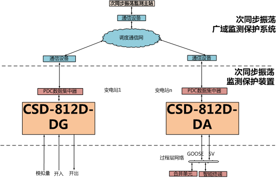

2019-03-14解决方案与产品
风电、光伏等新能源发电技术迅猛发展，使得电网面临频繁的次/超同步振荡干扰，安全稳定受到威胁。新能源集中接入地区电网的新型次同步振荡表现为频率宽频时变，多振荡分量并存且可远距离传播引发区域电网振荡。CSD-812D次同步振荡监测保护装置适用于对新能源厂站、新能源汇集站的进出线路的次同步/超同步振荡进行监测。
CSD-812D次同步振荡检测保护装置针对大规模新能源接入系统后引起的次同步/超同步振荡问题实施监测和保护，能够快速识别产生振荡的扰动源，实现新能源接入后发生振荡时有选择性地顺序切除扰动源，从而避免系统持续振荡、保障系统的安全稳定运行。
■监测：实时监测测点线路的振荡频率及振荡特征参量。
■保护：多层次的次/超同步保护功能，必要时切除振荡线路，保障区域安全。
■诊断：提供振荡特性分析参数，为振荡源/振荡传播规律研究提供数据支撑。
■基于原始采样数据的广域宽频高精度提取，频率自适应+多振荡模式分离；
■多特征参量（谐波频率/谐波阻抗/谐波功率/谐波电流/电压）全程在线监测；
■全方位多层次保护功能设计，基于传播方向的谐波阻抗实时计算为四方独有；
■灵活的保护功能配置与出口策略，依据不同应用场景，支持分组轮切与精细化切除；
■具备多种通信接口，支持组网，构建区域次同步振荡监控系统实现高级分析应用；
CSD-812D实现对风电场、风电汇集站线路次/超同步振荡功率/阻抗/电流的实时监视，当测点特征量越限且持续时间满足设定，切除振荡线路，防止振荡进一步扩张，同时，装置以IEEE Std C37规约上传测点监测信息及录波数据，便于主站获取全网次/超同步振荡态势，分析振荡来源/路径，优化运行方式，确保电网安全。

新能源集中接入地区次同步振荡广域监测保护系统网络结构图
四方股份为您提供优质的解决方案
如有任何问题，请与我们联系
邮箱：changfujie@sf-auto.com
电话：18611628359